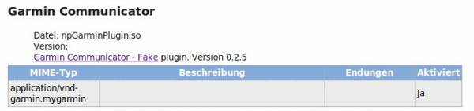

How do I check if the plugin was installed?
Enter about:plugins into your Firefox address bar and search for the plugin. You should find something like that

Can I use Garmin Express
No you can not. It currently requires software that does not exist for Linux. See garminexpress
My Garmin switches off as soon as I use your plugin
The automatic search for Edge305/Forerunner305 confuses some other devices so much that they turn itself off when used with gpsbabel. To disable the search edit the configuration set ForerunnerTools to false:
<ForerunnerTools enabled="false" />
Firefox 28+ plugin is installed but not found
If your plugin is found here but not here connect.garmin.com you should check plugins.enumerable_names under about:config.
Firefox introduced a new privacy feature that websites can no longer simply ask for all installed plugins. The result of this is that some websites do no longer find the plugin (eg: connect.garmin.com) while others do (eg: Garmin Install Check). The Firefox 29 on Windows behaved differently (working) than the Firefox 29 on Linux (not working), which made me investigate the whole thing. Apparently you can configure the new privacy feature and on Windows Mozilla simply turned it off in their default download.
To fix this go to “about:config” and add “Garmin Communicator”
plugins.enumerable_names = Java,Nexus Personal,QuickTime,Shockwave,Garmin Communicator
to disable use
plugins.enumerable_names = *
Website programmers might want to read: Javascript differences
The website ..... does not work
Please get in touch with me. I have only tested a few websites myself. This is usually something that can be solved without much work.
The website tells me my browser is not supported
Starting from version 0.2.7 this should no longer happen. If it still happens, please contact me so I can try to fix this issue. Until then you can still change your Browser User Agent to a windows browser. See here how to do this.
Can I use Chrome?
Yes since version 0.2.7 Chrome is supported. No separate installation needed, just start Chrome and use the plugin.
UnsupportedDataTypeException: Your device does not support reading of the type: FitnessHistoryDirectory
The website tries to read files from the device that are in the TCX format - but your device does not support reading in TCX format. You probably have a device that stores it's data in FIT format. Currently my plugin behaves just like the original plugin and does not internally convert FIT files to TCX files (might be implemented in a future version). The only thing you can do about it is to tell the website to also support FIT file format.
Forerunner/Edge 205/305 is detected but no data can be read
This could be an access rights issue. During the installation of the garminplugin (in Ubuntu) a udev rule is set so that every user can read from the garmin device (and not only root). This udev rule will only be active after udev service is restarted. You can simply reboot your system or try to restart udev with this command:
sudo service udev reload
Other distributions: If the plugin can only read data from your Forerunner/Edge when started as root you might need to set the below udev rule. The instructions on this page might help: http://wiki.openstreetmap.org/wiki/USB_Garmin_on_GNU/Linux
ATTRS{idVendor}=="091e", ATTRS{idProduct}=="0003", MODE="0666"
Forerunner/Edge 205/305 is not detected
If the plugin does not find your Forerunner/Edge device, it might be because the module garmin_gps blocks the device. Try unloading it:
sudo /sbin/rmmod garmin_gps
Where is the source code for the plugin?
How can I reach you?
Send an email to garminplugin@andreas-diesner.de
Preferred language: German or English
I found an error! Who should I contact?
Send me an email… see above.